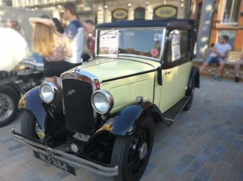

Hull Minster Car Show
Join the Lord Mayor’s Gala in Hull with your Mayflower
· 9th May 2018
Dave Gibbs (1207), one of our members from the Hull area, has sent an open invitation to join the Hull Minster Car Show, to run alongside the Lord Mayor’s Gala. The hope is to try and fill the whole city. The event will start at 09:30 and continue until 16:30.
The show’s website information is a little scarce at present, although it declares that:
“The Hull Minster Car Show is back, but bigger and better! If you came to the show last July in Trinity Square, you won’t want to miss this year’s event.
This year, we’re part of the Hull Lord Mayor’s Gala, so we want to fill Hull City Centre with amazing cars all day on Saturday 16th June.
There’ll also be some special things happening in Trinity Square.”
Photos on the site include ‘super cars’, American cars and the odd UK classic thrown in!
Enjoy your day out, but don’t forget to drive to Middle Claydon in Buckinghamshire for the Annual TMC Rally the following day!